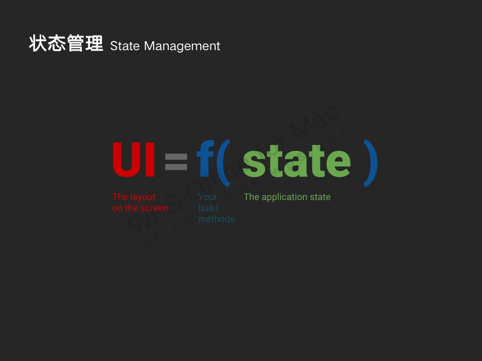
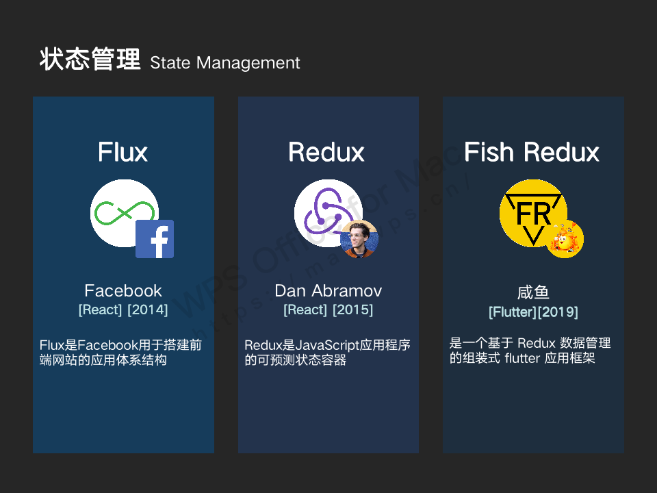
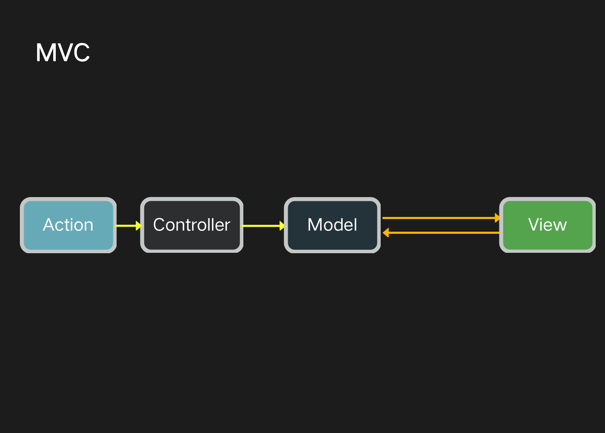
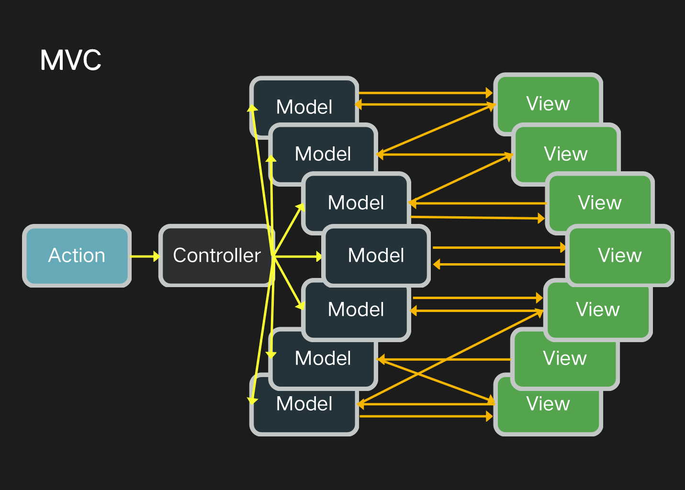
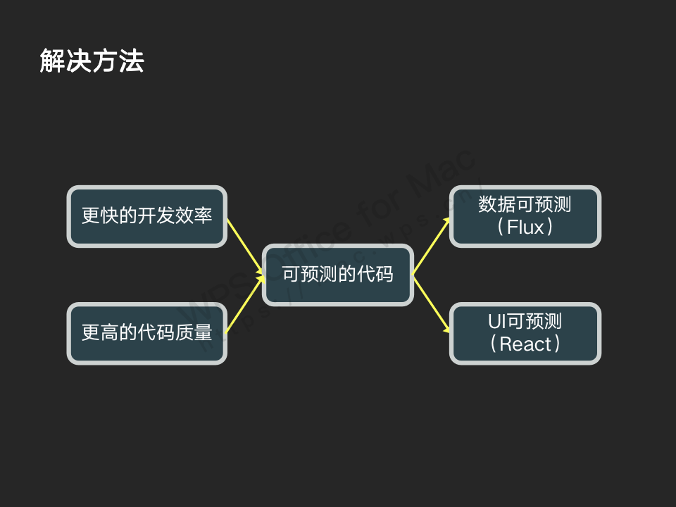
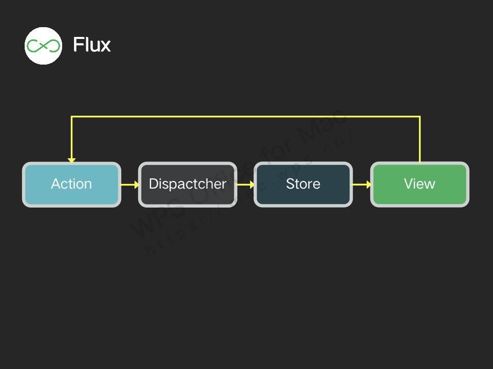
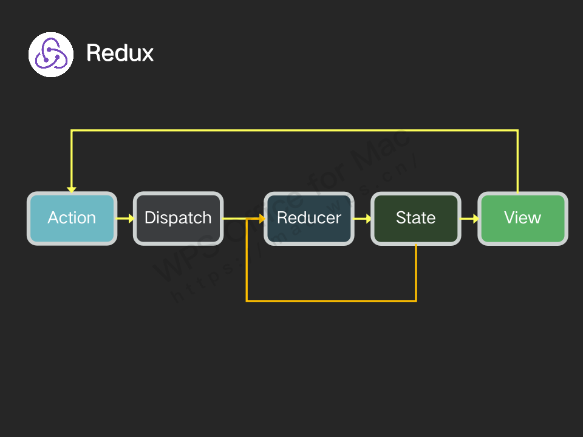
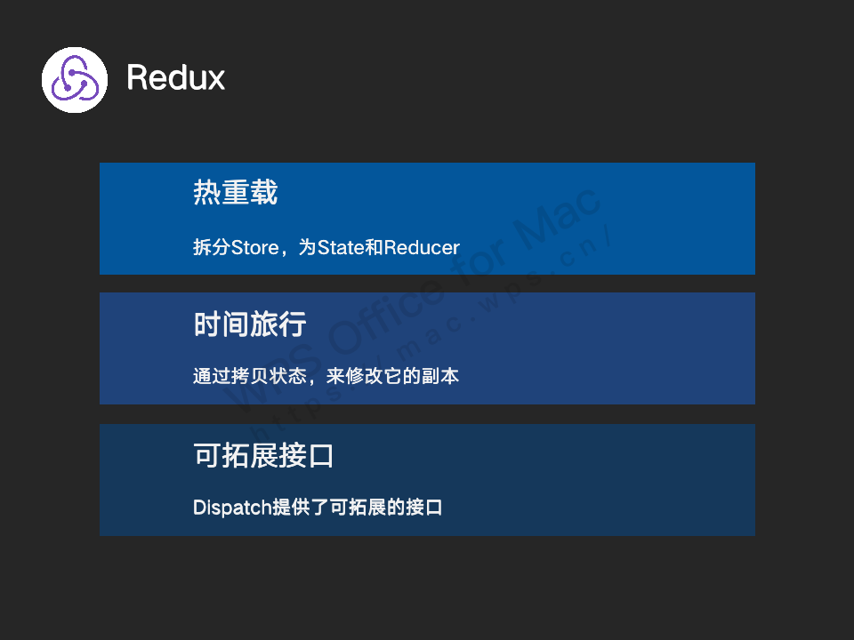
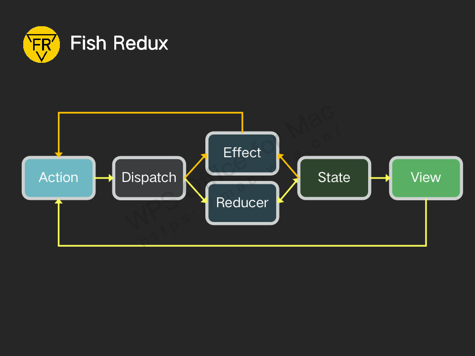

状态管理
了解前面的知识，就可以简单开发些小项目了，但是如果想要构建稍微复杂点的项目就不得不了解“状态管理”的概念，“状态管理”这是一个来自前端开发的名词，简单的来说当你问一个前端项目如何进行状态管理时，就等于问这个项目是如何设计的一样。
简介

因为，React、Vue等前端框架大行其道，响应式编程的理念也随之流行，在具体的项目中描述好UI和状态之间的关系后，我们只需要专注于状态的改变就好了，而框架将会根据我们的描述，自动根据状态来更新UI。不像在Android端常见的命令式编程，需要我们手动去指定控件展示的内容。

Flux、Redux、Fish_Redux
对于如何理解“状态管理”这个概念我还是想以追本溯源的方式来解释给大家听，首先，当前奇妙拼音项目用到的状态管理框架是阿里巴巴咸鱼团队开源的Fish_Redux, 而Fish_Redux的基本思想又是来源于React技术栈下的Redux，从Redux再往前推就是最初与React一同登场的Flux。

Flux : 缘起
在没有Flux和React之前，Facebook的工程师一直被一个小bug困扰
Facebook消息提示问题
一般社交类产品除了主屏上的动态列表，通常还会在明显的位置摆放一个查看消息的入口，这个入口上会有小红点表示当前有多少条未读消息。
当时有些用户发现在使用Facebook的过程中消息入口上有小红点，但是点击进消息列表却没有未读消息的情况。用户看到红点进入消息页没有未读消息，小红点消失，过一会儿小红点再次出现，进入消息页依旧没有未读消息。就这样循环往复，开发团队也是在修复bug再次出现这个bug中循环往复。
不可预测的MVC
我们先来看看当时当时Facebook项目的架构，对于小型项目来说的MVC模型，看起来似乎还挺可靠的

但是随着业务量的增大，MVC的问题越来越明显，依赖关系和各种层级的更新经常在大型MVC应用程序中发生，从而导致数据流错综复杂和不可预期的结果，前面的bug也是在这样的项目结构下，出现循环引用而导致的。

解决方案
为此，facebook的工程师打算将项目架构推倒重来，目标是为了更快的开发效率和更高的代码质量，为了做到这两点需要的是可预测的代码，也就因此最后分别开发出了响应式UI框架React来达到UI的可预测，状态管理框架Flux达到数据的可预测。

Flux
Action是由ActionCreators提供给Dispactcher，通常是由用户与视图的交互产生的
Dispactcher将会根据Action的类型来通知Store触发页面初始化时在Store中注册的回调
Store响应Dispactcher的请求对其内所维护的状态进行相关操作，操作完成后将会通过Event Handler告诉View有数据发生改变
View监听到数据改变并从Event Handler中获取对应的数据以此来刷新UI

Redux : 优化Flux
在Flux发布之后一段时间里Dan Abramov看到了可以优化Flux的可能，于是就基于Flux创造出了Redux
Redux在Flux的基础上做出了一些改进，在Flux中Store包含了状态改变的逻辑和当前应用的状态，而在Redux中将Store的两个部分拆分为处理状态改变逻辑的Reducer和状态State，在Flux中没有提供给开发则监听单向数据流的拓展，而Redux将Dispactcher改名为Dispatch，并在其中提供了用于监听数据流拓展接口。Redux具体流程和Flux类似，其中需要注意的是Reducer响应Dispatch时不仅会收到Action的信息还会有当前状态的拷贝，Reducer对拷贝的状态操作完成后，传递给State并由此更新。

Redux特性
通过对Flux的优化，Redux得到了更便捷的热重载，可以回退应用状态的时间旅行，以及可以监控单向数据流的拓展接口
热重载：在开发应用程序时，通常是一个接一个的小改动。您看到较小更改的效果的速度越快，开发就会越快。热重载的优点在于，可以实时的将修改的逻辑代码更新到应用中，而应用程序的状态却不会重置。虽然React配合Flux也可以热重载，但是因为Store中包含了应用状态和逻辑代码，如果对Store的代码热重载将会丢失当前的状态。在Redux中将Store拆分后，即可对操作状态的逻辑代码进行热重载了。
时间旅行：通过拷贝状态的方式，可以得到一连串的状态切片，每个切片又由对应的Action触发，有了这些切片，我们在调试程序的过程中，可以进行时间回溯，重新加载出现错误时的前一个状态。例如，在测试的过程中执行了某个操作导致出现异常，我可以回退到上一步，重新来一次。
可拓展接口：可以通过Dispatch监听所有经过它的Action，可以用来打印日志，用来埋点等等。

Fish_Redux：适配Flutter
Fish Redux 基于Redux在Flutter端的状态管理框架。将Redux中的Reducer再区分出了一个Effect
因为Flutter编译的发布包是AOT，代码中不支持反射、Hook等操作，所以无法判断Reducer处理完成后的状态是否有更新，因此需要将不做状态更新的代码显式的移到Effect中去执行，这样也是为了不让UI刷新过于频繁，影响性能。

如果您喜欢此博客或发现它对您有用，则欢迎对此发表评论。 也欢迎您共享此博客，以便更多人可以参与。 如果博客中使用的图像侵犯了您的版权，请与作者联系以将其删除。 谢谢 ！